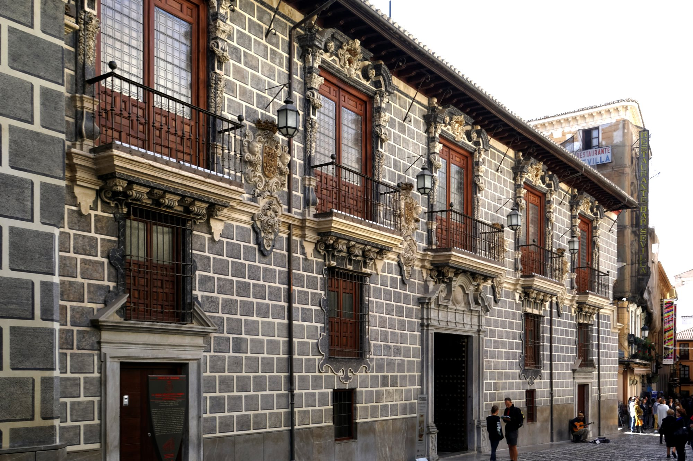
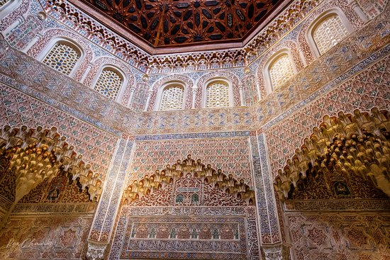

La Madraza fue la primera universidad de Granada, fundada por Yusuf I en 1349 con todo el esplendor nazarí de la época.
En ella enseñaron personajes tan ilustres como Ibn al-Jatib o Ibn Zamrak, cuyos poemas decoran las paredes y fuentes de la Alhambra.
Situada en el centro de Granada, en la calle Oficios, es el único edificio de la época que queda en pie, en lo que fue una de las zonas más emblemáticas de la Granada nazarí: el arrabal de la Mezquita Mayor.
El nombre de Madraza viene de la palabra árabe "medersa", que significa escuela o universidad coránica.
Fernando II de Aragón cedió el edificio para Casa del Cabildo (Ayuntamiento) en 1500, después de que su riquísima biblioteca fuera quemada por Cisneros en la plaza Bib-Rambla en una de las quemas más grandes de Europa.
Desde entonces fue transformándose por completo hasta alcanzar su actual fisonomía barroca en 1722, demoliéndose los restos de la construcción árabe.
Hasta 1841 estuvo aquí alojado el Ayuntamiento - se conoce también como Ayuntamiento viejo - y finalmente el Estado lo recuperó en 1943.
Hoy pertenece a la Universidad de Granada y es sede de la Real Academia de Bellas Artes Nuestra Señora de las Angustias.
De la época nazarí se conserva el oratorio con un precioso mihrab, su cúpula octoganal es bellísima, aunque ha tenido que ser restaurada en varias ocasiones debido al deterioro que presentaba.
Los restos de su magnífica portada de mármol blanco se conservan en el Museo Arqueológico de la ciudad. Hoy en día su fachada es de estilo barroco, con suntuosos balcones y portada con emblemas de los Reyes Católicos.
En el piso superior se encuentra el Salón de Caballeros XXIV, donde se reunían los ediles del Ayuntamiento. Aquí se conserva el valiosísimo cuadro de la Virgen de la Rosa, que había estado primero en la Catedral y luego en la Puerta de Bib Rambla.
| Precio | |
|---|---|
| Entrada General | 2€ |
| Horario | |
|---|---|
| Lunes a Domingo | 10:00-19:00 |